1. Getting Started
Desktop app (client deployment)
Pulse ships as a single installer — no separate PHP, MySQL, or web server setup.
| Platform | Installer |
|---|---|
| macOS (Apple Silicon) | Pulse-<version>-arm64.dmg |
| Windows | Pulse-<version>-setup.exe |
First launch
- Double-click the Pulse app icon.
- The app creates its local database automatically (SQLite).
- Migrations and reference data run in the background.
- The login screen opens when ready.
Development / browser access
For internal testing, developers can run php artisan serve and open http://127.0.0.1:8000.
2. Signing In
Open Pulse and enter your credentials on the sign-in screen.
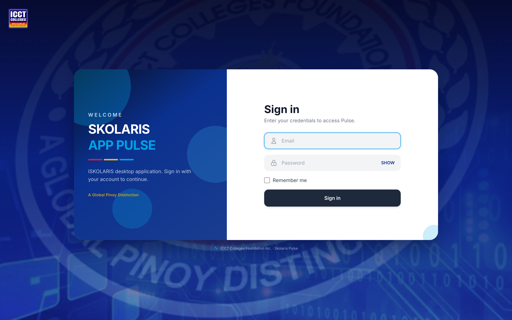
| Field | Ano ito | Para saan (Gamit) | Notes |
|---|---|---|---|
| Login email address ng user account | Authentication — sino ang nagla-login | Desktop default: superadmin@icct.edu.ph | |
| Password | Account password | Security — verify na authorized ang user | Desktop default: Password123! |
| Remember me | Checkbox para manatiling naka-login | Hindi na kailangan mag-login ulit sa same machine | Optional |
| SHOW | Toggle visibility ng password | Tulong sa pag-type; hindi nagbabago ng value | UI button lang |
4. Dashboard
The Dashboard is your home screen after login.
Summary cards show:
- Signed-in user and email
- Assigned role(s)
- Total users and roles (administrators only)
Quick access (administrators) links to User Management, Role Management, and Database backup.
5. Administration
5.1 User Management — Create / Edit User
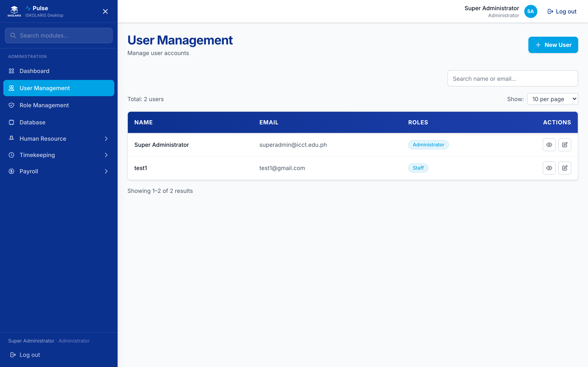
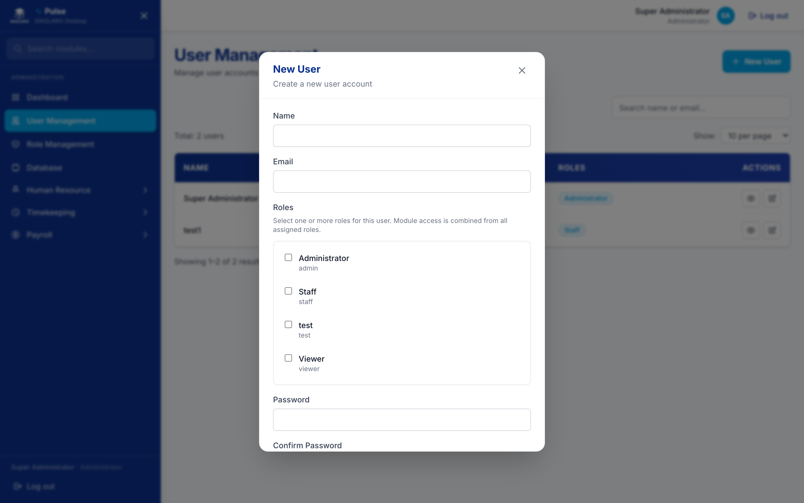
| Field | Ano ito | Para saan (Gamit) | Notes |
|---|---|---|---|
| Name | Display name ng user | Makikita sa audit logs, dashboard, at uploaded-by columns | Required |
| Login email | Unique identifier para mag-sign in | Required; unique | |
| Roles | Checkbox list ng roles | Determines kung anong modules ang accessible | Min 1 role required |
| Password | Bagong password | Account security | Create: required min 8; Edit: optional |
| Confirm Password | Ulitin ang password | Prevent typo sa password | Must match kapag may password |
5.2 Role Management — Create / Edit Role
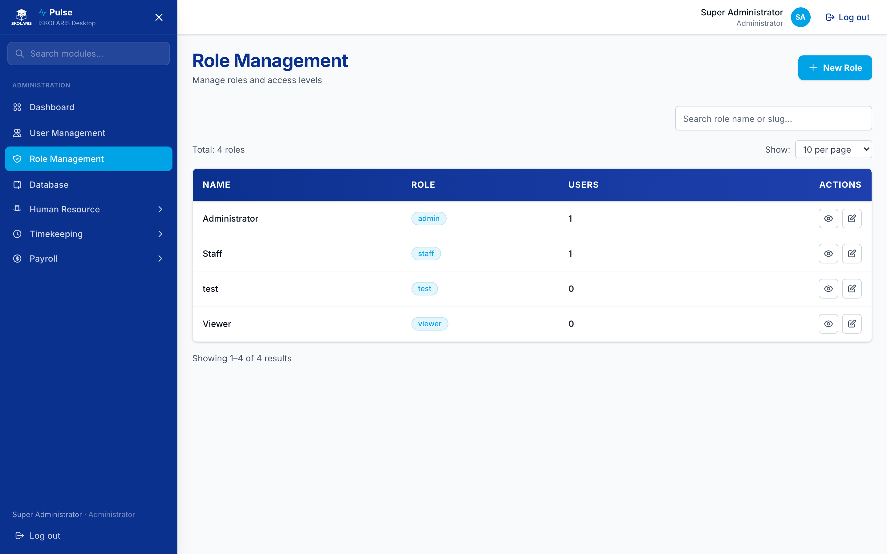
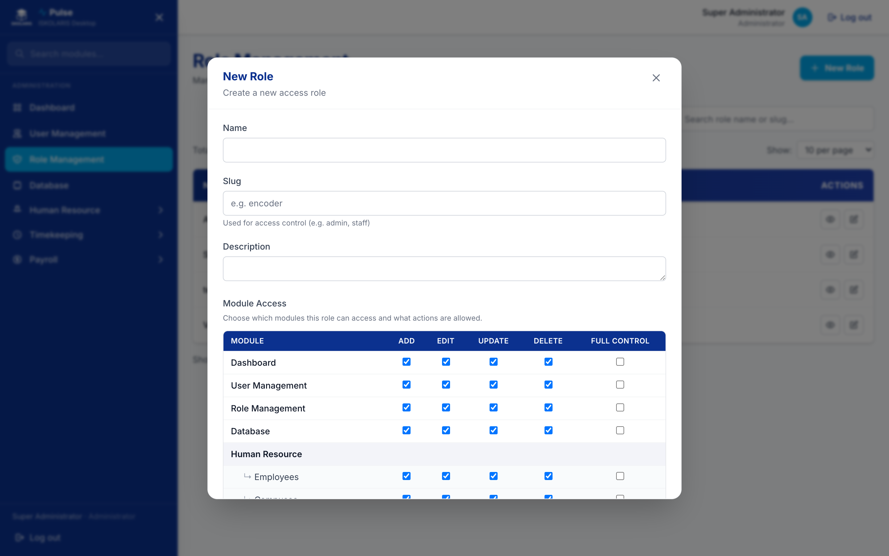
Basic info
| Field | Ano ito | Para saan (Gamit) | Notes |
|---|---|---|---|
| Name | Role display name (hal. "Payroll Staff") | Label sa UI at user assignment | Required |
| Slug | Machine ID (hal. payroll-staff) | Internal access control key | Create only; auto from name |
| Description | Role summary | Documentation para sa admins | Optional |
Module permissions (per module / sub-module)
| Field | Ano ito | Para saan (Gamit) | Notes |
|---|---|---|---|
| Add | Create permission | Pwede mag-Add / Upload / Create | Checkbox |
| Edit | Open edit UI | Makikita ang Edit button sa rows | Checkbox |
| Update | Save changes | Pwede mag-save ng edits | Checkbox |
| Delete | Remove records | Pwede mag-delete (soft delete) | Checkbox |
| Full Control | All CRUD permissions | Shortcut — grants lahat ng permissions | Disables individual checkboxes |
| Role Members | Users assigned to role | Sino ang may access level na ito | Add/remove users sa role |
Built-in roles: Administrator (full access), Staff (daily modules), Viewer (read-only).
5.3 Database
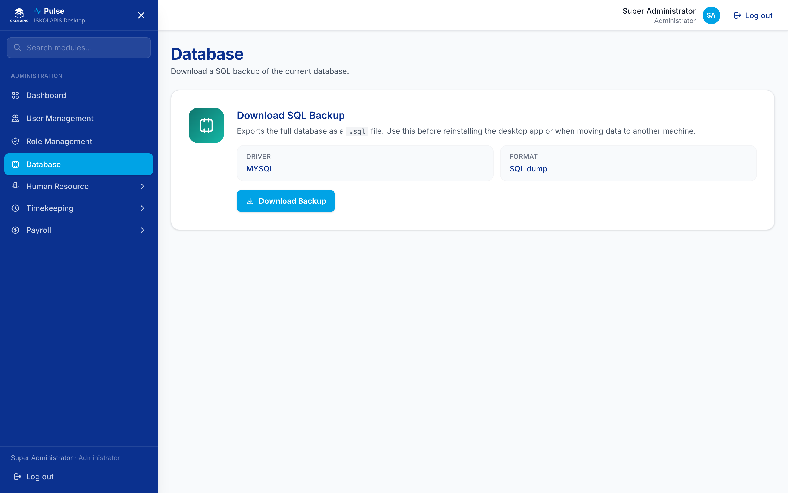
Walang input fields. Read-only display ng database driver + Download Backup button para kumuha ng full .sql dump bago reinstall o data migration.
6. Human Resource
6.1 Employee Wizard / Edit Form
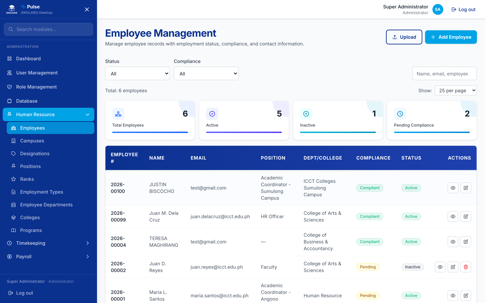
Step 0 — Campus Selection
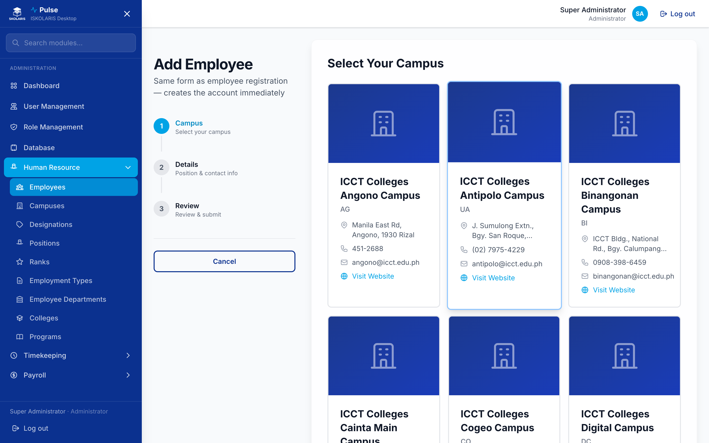
| Field | Ano ito | Para saan (Gamit) | Notes |
|---|---|---|---|
| Campus | Primary work campus | Sets default campus sa wizard; affects college/program dropdowns | Required; card selection |
Personal Information
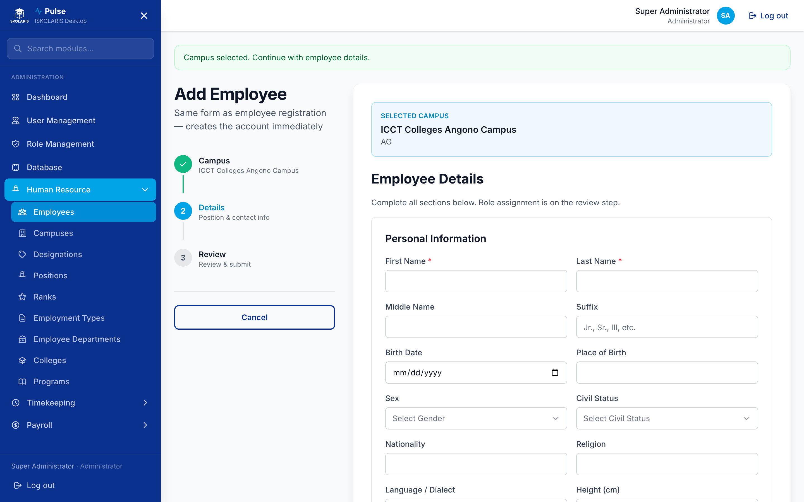
| Field | Ano ito | Para saan (Gamit) | Notes |
|---|---|---|---|
| First / Last Name | Legal name | Employee identity sa lahat ng modules | Required |
| Middle Name / Suffix | Additional name parts | Complete legal name | Optional |
| Birth Date / Place of Birth | Personal demographics | HR records, reports | Optional |
| Sex / Civil Status | Demographics | HR master data | Select dropdowns |
| Nationality / Religion / Language | Background info | HR profile | Optional |
| Height / Weight | Physical stats | HR profile | Numbers |
| TIN / SSS / PhilHealth / Pag-IBIG / GSIS | Government IDs | Govt deduction computation sa payroll; compliance | Important para sa SSS/PH/PI/WHT |
| Tax Status | Withholding tax status | BIR tax computation context | Optional text |
Assignment & Organization (per campus row)
| Field | Ano ito | Para saan (Gamit) | Notes |
|---|---|---|---|
| Campus | Work location | DTR scope, campus-specific biometric matching | Required; pwede multiple campuses |
| Biometric ID | Device punch ID sa campus | Match ng time logs / DTR uploads sa tamang employee | Required; unique per campus |
| College / Department / Program | Org unit assignment | Payroll calendar filtering, faculty load, reports | College/program filtered by campus |
Employment Information
| Field | Ano ito | Para saan (Gamit) | Notes |
|---|---|---|---|
| Hybrid | Faculty + Staff dual role | Gumagawa ng 2 employment records (faculty at staff) | Checkbox |
| Employee Number | Unique HR ID | Payroll batches, uploads, time logs reference | Required; auto-generated kung blank |
| Compliance Status | Document compliance state | Track kung complete ang requirements | pending / compliant |
| Category (User Type) | faculty, staff, o admin | Payroll calendar category filter; employment type | Required per employment row |
| Position / Designation / Rank | Job classification | HR records, org structure | From lookup tables |
| Employment Type | Regular, contractual, etc. | Employment classification | From lookup |
| Hire Date | Start date | Tenure, eligibility rules | Date field |
Contact Information
| Field | Ano ito | Para saan (Gamit) | Notes |
|---|---|---|---|
| Primary email | Contact; pwede rin system account | Required | |
| Primary Phone | Main contact number | Emergency reach | Required |
| Home / Work / Fax | Additional phones | Contact records | Optional |
| Emergency Contact | Name, relationship, phone, email, address | Emergency situations | Optional group |
Home Address
| Field | Ano ito | Para saan (Gamit) | Notes |
|---|---|---|---|
| Country | PH o international | Toggle cascading PH address fields | Select |
| No./Street | Street address | HR mailing/contact | Text |
| Region / Province / City | PH geographic hierarchy | Standardized address; auto postal code sa PH cities | Cascading selects |
| Barangay / Postal Code | Local area + zip | Complete address | Optional |
Extended Profile (optional sections)
| Section | Fields | Para saan (Gamit) | Notes |
|---|---|---|---|
| Family Background | Parents, spouse, children info | Complete HR biodata | Text fields |
| Family Members | Brothers/sisters/children rows | Dependents record | Repeatable rows |
| Employment History | From, To, Company, Position, Salary | Previous work experience | Repeatable |
| Exams / Seminars / Awards | Credentials at trainings | Qualifications tracking | Repeatable |
| References | Name, Company, Contact | Background check contacts | Repeatable |
| Skills Profile | Computer, technical, talents, other | Skills inventory | Comma-separated or text |
| General Information | Health/disability, relative in ICCT, cases, etc. | HR screening declarations | Checkboxes + text |
Account Access & Review Step
| Field | Ano ito | Para saan (Gamit) | Notes |
|---|---|---|---|
| Account Status | active / inactive | Kung counted ang employee sa operations | Required |
| Confidential Record | Restrict visibility | Limit sino makakakita ng record | Checkbox |
| System Role | App permission role | Kung may login access ang employee sa Pulse | Required sa final wizard submit |
6.2 Employee Salary (per employment)
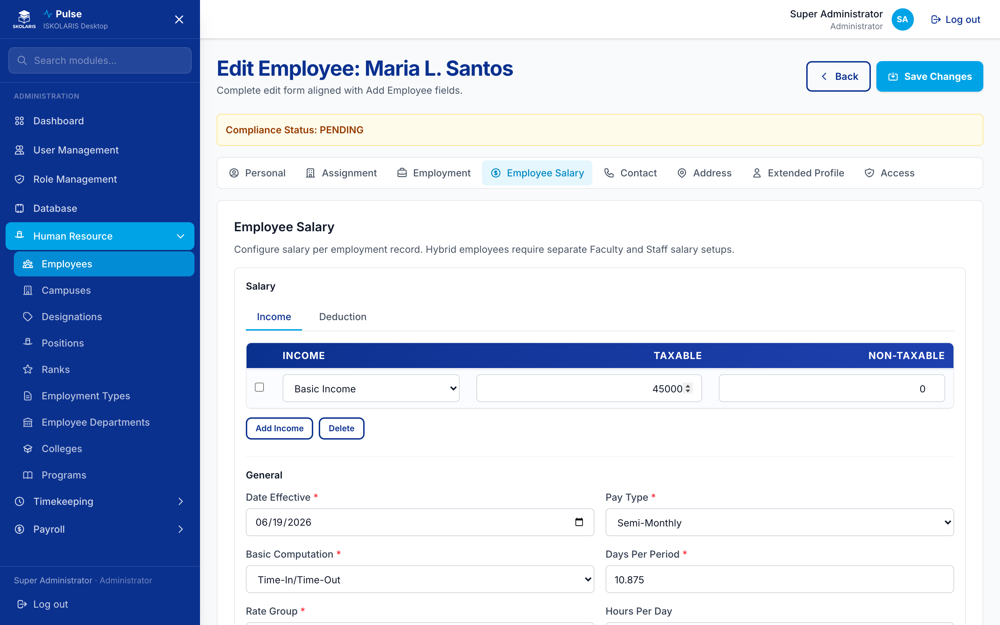
| Field | Ano ito | Para saan (Gamit) | Notes |
|---|---|---|---|
| Income rows | Income type + Taxable + Non-Taxable | Define pay components (BASC, allowances, etc.) | Repeatable; BASC usually primary |
| Deduction rows | Deduction type + Employee + Employer amounts | Fixed recurring deductions sa employee | Repeatable |
| Date Effective | When salary takes effect | Salary history tracking | Required |
| Pay Type | Daily / Weekly / Semi-Monthly / Monthly | Determines pay period at payroll calendar at batch | Required |
| Basic Computation | Time-In/Time-Out o Leaves | Paano kino-compute ang basic pay | Required |
| Days Per Period | Working days per pay period | Hourly rate calculation | Auto=1 for Daily |
| Rate Group | OT/holiday rate multiplier group | Hours worked at special day types sa payroll | Required |
| Hours Per Day | Standard hours per day | Hourly rate = basic ÷ days ÷ hours | Default 8.00 |
| Night Diff. Rate Group | ND rate group | Night differential pay computation | Optional |
| Use Basic Income as Hourly Rate | Direct hourly rate mode | Kapag basic amount na mismo ang hourly rate | Skips days/hours formula |
| Hourly Rate | Computed rate (display) | Used sa hours-worked payroll computation | Read-only; auto-calculated |
6.3 Employee Bulk Upload
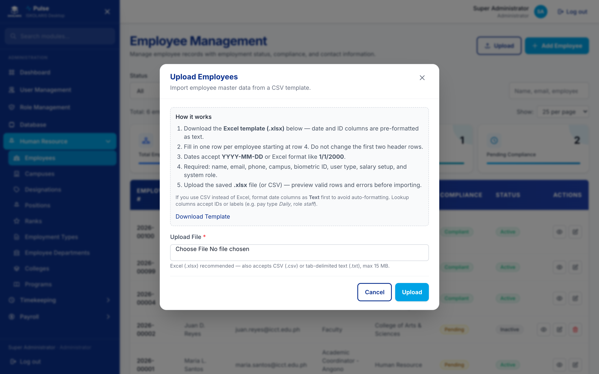
| Field | Ano ito | Para saan (Gamit) | Notes |
|---|---|---|---|
| Upload File | CSV/XLSX employee template | Mass import ng employee master data | .xlsx/.csv/.txt; max 15 MB |
Key template columns:
| Column group | Key columns | Para saan (Gamit) | Required |
|---|---|---|---|
| Identity | employee_number, first_name, last_name, email, phone | Core employee record | name + email + phone |
| Campus | campus_code, biometric_id, college, department, program | Assignment at time log matching | campus_code, biometric_id |
| Employment | user_type, position, designation, rank, employment_type, hire_date, is_hybrid | Job classification | user_type |
| Salary | salary_pay_type, salary_basic_computation, salary_rate_group, salary_days_per_period, salary_basic_taxable, salary_incomes, salary_deductions | Payroll setup | date_effective, pay_type, basic_computation, rate_group |
| Govt IDs | tin_number, sss_number, philhealth_number, pagibig_number | Government deductions | Recommended |
| Account | employment_status, role | Active status at system access | role |
Sample: docs/samples/employee-upload-sample.csv
6.4 Employee List Filters
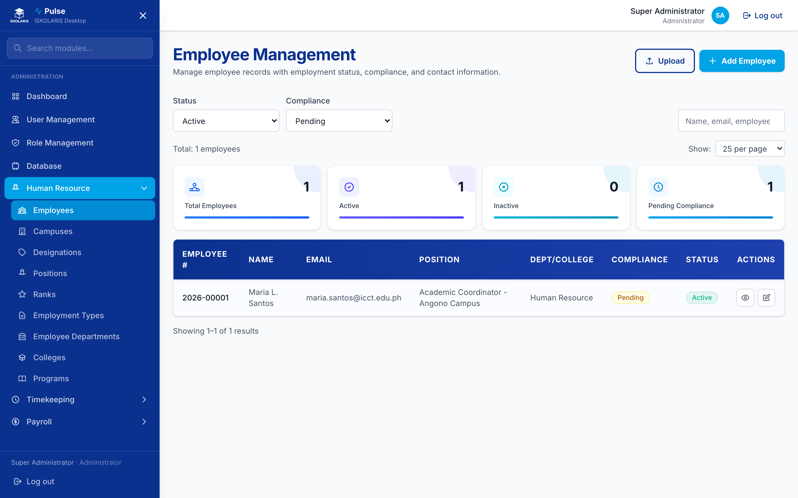
| Field | Ano ito | Para saan (Gamit) | Notes |
|---|---|---|---|
| Status | all / active / inactive | Filter employee list by employment status | Dropdown |
| Compliance | all / compliant / pending | Filter by document compliance | Dropdown |
| Search | Free text | Name, email, employee #, position | Live search |
6.5 HR Lookup Tables
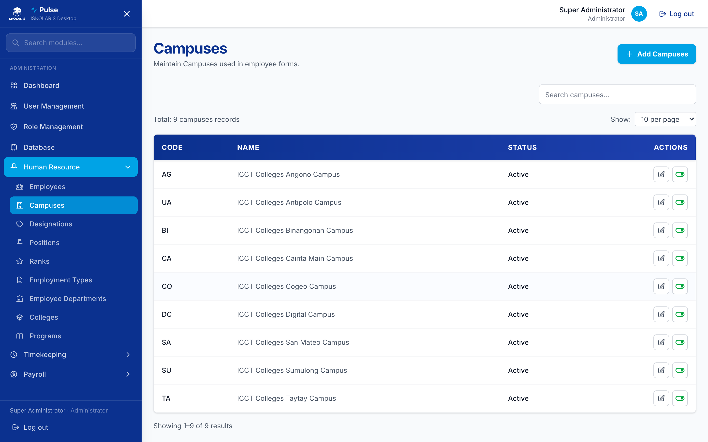
Campuses
| Field | Ano ito | Para saan (Gamit) | Notes |
|---|---|---|---|
| Campus Code / Name | Short code at full name | Employee assignment, DTR campus, upload matching | Code required, unique |
| Address / Phone / Email / Website | Campus contact info | Reference data | Optional |
| Active | Status flag | Hide inactive campuses sa dropdowns | Checkbox |
Designations / Positions / Ranks
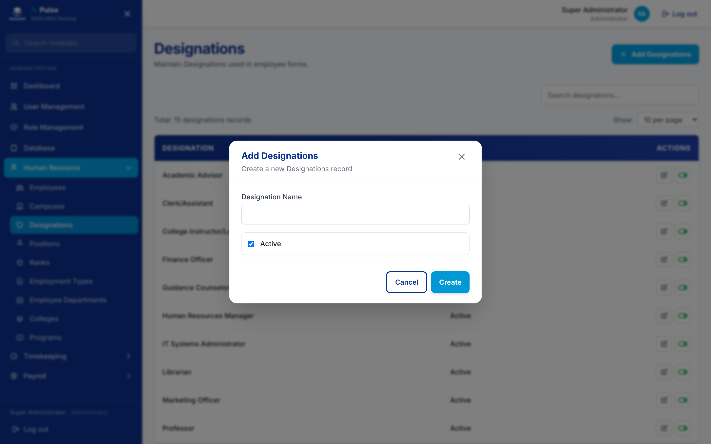
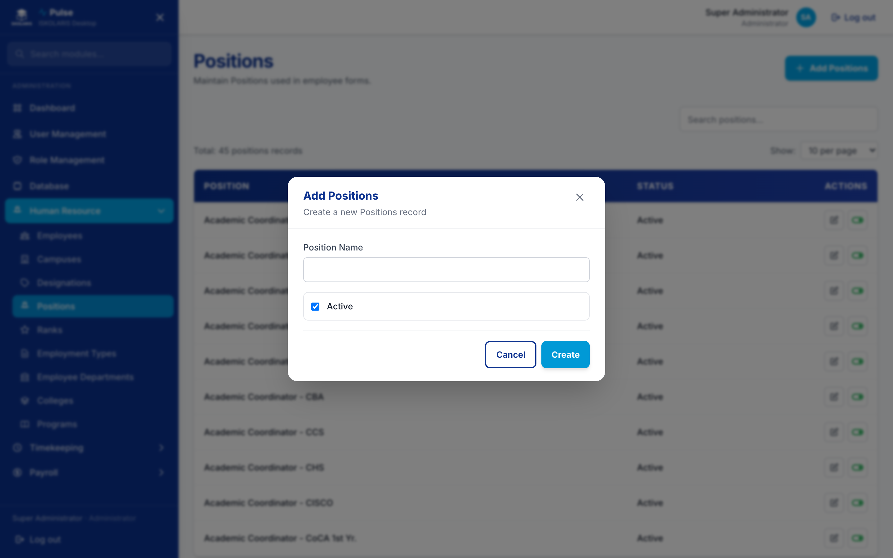
| Field | Ano ito | Para saan (Gamit) | Notes |
|---|---|---|---|
| Name | Job title / designation / rank | Employee employment classification | Required, unique |
| Active | Status | Available sa employee forms | Checkbox |
Employment Types
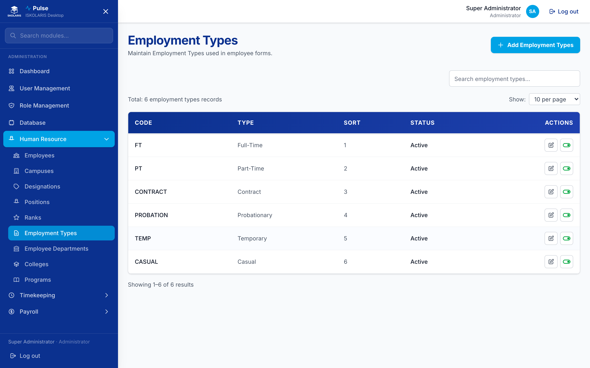
| Field | Ano ito | Para saan (Gamit) | Notes |
|---|---|---|---|
| Type Code / Name | Employment classification | Regular, contractual, part-time, etc. | Name required |
| Description / Sort Order | Details at display order | Dropdown ordering | Optional |
| Active | Status | Dropdown availability | Checkbox |
Employee Departments
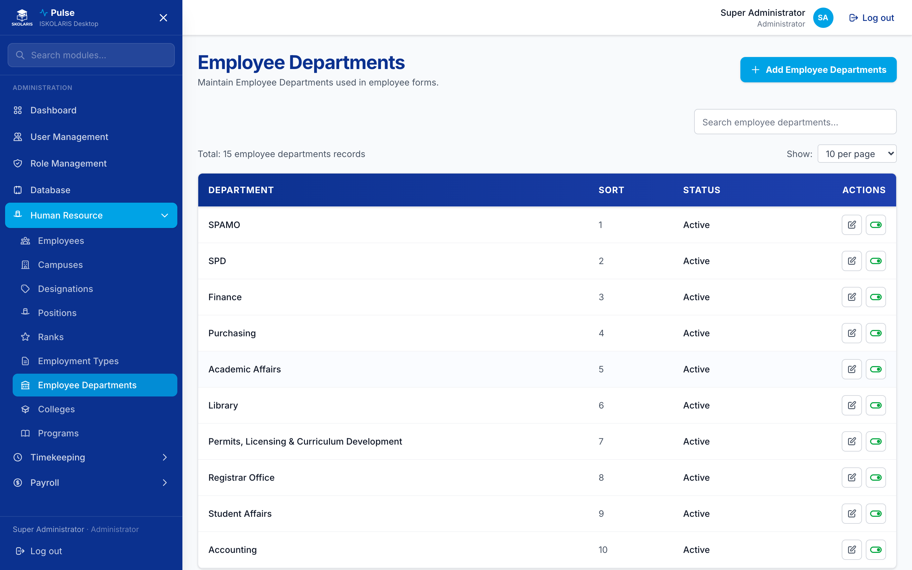
| Field | Ano ito | Para saan (Gamit) | Notes |
|---|---|---|---|
| Department Code / Name | Org unit | Employee department assignment | Name required |
| Description / Sort Order / Active | Metadata | Display at filtering | Optional |
Colleges / Programs
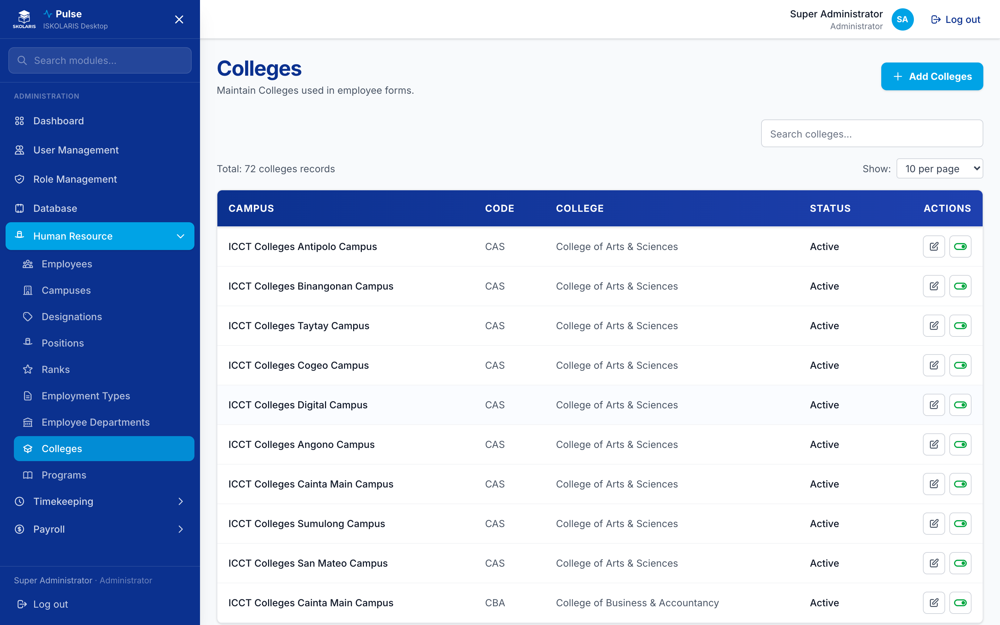
| Field | Ano ito | Para saan (Gamit) | Notes |
|---|---|---|---|
| Campus | Parent campus | Scope college/program to campus | Required |
| Code / Name | College or program identifier | Faculty assignment, payroll calendar college filter | Required |
| Description / Active | Details at status | Colleges only for description | Optional |
7. Timekeeping
Ang Timekeeping module ang nagde-define kung paano basahin ang attendance — mula sa policy setup, shift, holiday, hanggang sa upload ng time logs at faculty load.
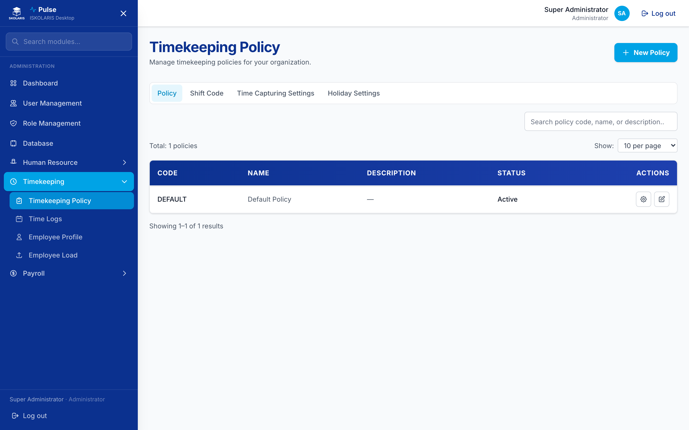
7.1 Policy — Create / Edit Policy
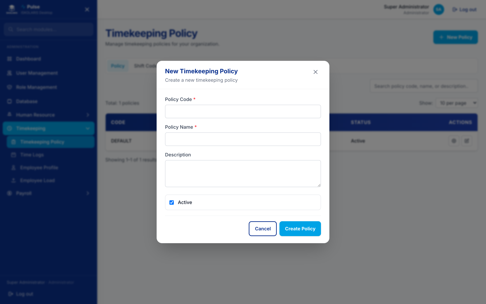
Gumagawa ng policy group na ia-assign sa employees. Bawat policy may sariling tardiness, OT, breaks, at ND rules.
| Field | Ano ito | Para saan (Gamit) | Notes |
|---|---|---|---|
| Policy Code | Maikling unique code ng policy (hal. STAFF) | Unique identifier ng policy group sa employee assignment | Required; auto-uppercase; hindi na pwedeng baguhin pag edit |
| Policy Name | Pangalan na makikita sa dropdowns | Display name sa Employee Profile dropdown | Required |
| Description | Opsyonal na paliwanag | Documentation / label sa lists | Max 250 characters |
| Active | Kung available ang policy para i-assign | Control kung selectable pa ang record | Default: checked (active) |
7.2 Shift Code — Create / Edit Shift
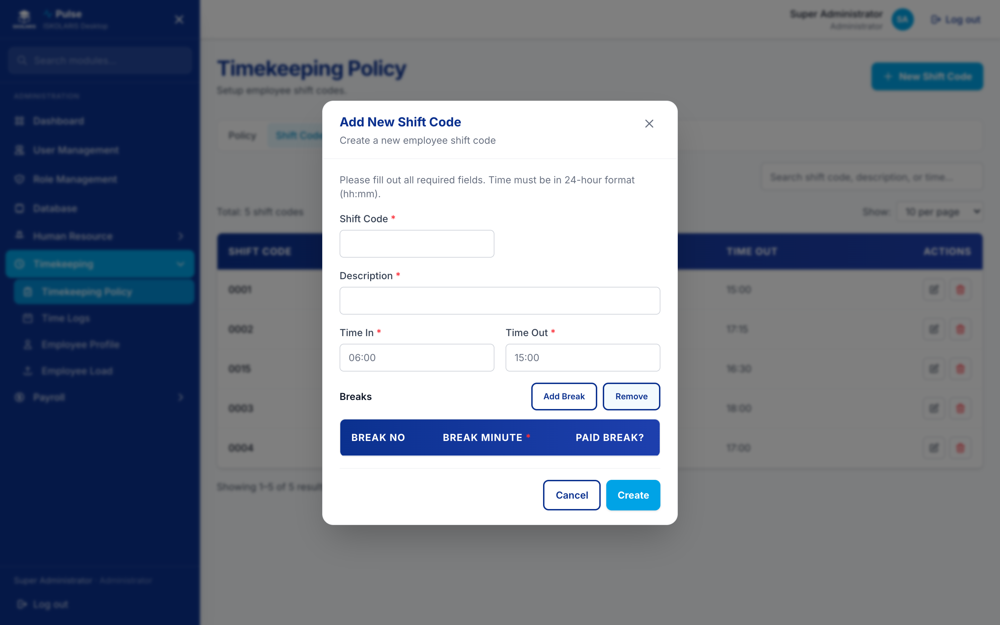
Narito ang regular na oras ng pasok, uwian, at break schedule ng employee.
| Field | Ano ito | Para saan (Gamit) | Notes |
|---|---|---|---|
| Shift Code | Maikling code (hal. AM, FLXI) | Required; max 4 chars; unique | |
| Description | Label ng shift (hal. "Morning Shift") | Documentation / label sa lists | Required |
| Flexi-time Shift | Checkbox — actual hours rendered ang base ng pay | Kahit anong oras pumasok; walang late/UT; OT kapag lampas sa expected hours/day | Default off; shows Expected Hours Per Day (hal. 8) |
| Expected Hours Per Day | Target hours per day para sa flexi shift | Basic pay cap; excess = OT | Required kapag Flexi-time = on |
| Time In | Scheduled na oras ng pasok | Format HH:MM (24-hour, hal. 08:00) | Fixed shift only; naka-gray out kapag flexi |
| Time Out | Scheduled na oras ng uwian | Format HH:MM | Fixed shift only; naka-gray out kapag flexi |
| Break Minute | Tagal ng break sa minuto | Expected break duration sa payroll break logic | Pwede mag-add ng multiple breaks; required per break row |
| Paid Break? | Kung counted ang break bilang paid time | Kung counted ang break sa paid hours | Checkbox; default off |
7.3 Time Capturing Settings — Device Format
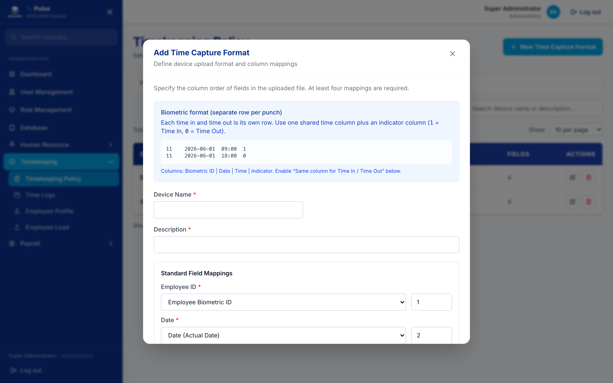
Sinasabi kung aling column sa upload file ang employee ID, date, time in/out, at iba pa. Kailangan ito bago mag-upload sa Time In / Time Out tab.
| Field | Ano ito | Para saan (Gamit) | Notes |
|---|---|---|---|
| Device Name | Pangalan ng biometric/device format | Piliin sa Time Logs upload Format Type dropdown | Required; unique; uppercase |
| Description | Paliwanag ng format | Documentation / label sa lists | Required |
| Employee ID (type) | Anong ID ang ginagamit | employee_number o biometric_id | |
| Employee ID (column) | Column number ng ID sa file | Parse correct column sa upload file | Number 1–99 |
| Date (type) | Uri ng date field | actual_date, date_out, o workdate | |
| Date (column) | Column number ng date | Locate date sa upload file | Required |
| Time In (type / column) | Column para sa time in | Parse time-in punches from file | Disabled kapag biometric mode |
| Time Out | May separate time-out column ba? | Parse time-out punches from file | Checkbox + column number; default on |
| Same column for Time In / Time Out | Biometric mode — isang column lang para sa punch | Biometric punch-per-row parsing | Kapag on: kailangan ng Indicator Column |
| Time Column | Shared punch time column | Single punch time column sa biometric files | Biometric mode only |
| Indicator Column | Column na nagsasabi kung IN o OUT ang punch | Distinguish IN vs OUT punches | Biometric mode only |
| Time In Identifier | Character/value na meaning "IN" | Hal. 1 | |
| Time Out Identifier | Character/value na meaning "OUT" | Hal. 0; dapat iba sa IN | |
| Logout Reason | May column ba para sa logout reason? | Optional reason code from device export | Optional checkbox + column |
| Custom Fields | Extra mapped columns | Extra data columns from device export | Field name + column + description; hindi pwedeng duplicate columns |
7.4 Holiday Settings
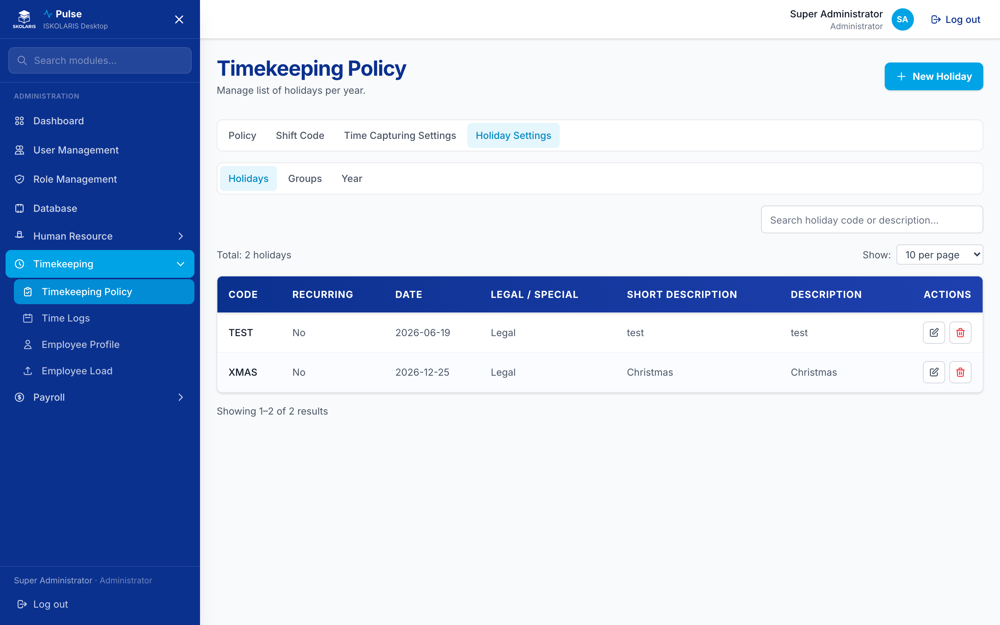
May tatlong sub-tabs: Holidays, Groups, at Year.
Holidays — Add / Edit Holiday
| Field | Ano ito | Para saan (Gamit) | Notes |
|---|---|---|---|
| Holiday Code | Maikling code (hal. NY) | Reference code sa holiday groups at year entries | Required; unique; uppercase |
| Recurring | Auto-copy sa bagong years | Auto-include sa new holiday years | Checkbox |
| Description | Buong pangalan ng holiday | Documentation / label sa lists | Required |
| Short Description | Maikling label | Abbreviated label sa reports | Optional |
| Date | Petsa ng holiday | When holiday applies | Required |
| Legal / Special | Legal holiday o special non-working holiday | Legal vs special holiday pay rules | Radio; default Legal |
Groups — Add / Edit Holiday Group
| Field | Ano ito | Para saan (Gamit) | Notes |
|---|---|---|---|
| Holiday Group Code | Code ng grupo (hal. MAIN) | Assign sa Employee Profile Holiday Group | Required; unique |
| Description | Pangalan ng grupo | Documentation / label sa lists | Required |
| Select Holidays | Mga holiday na kasama sa grupo | Define which holidays belong to group | Dual-list; minimum 1 holiday |
Year — Add Year / Manage Entries
| Field | Ano ito | Para saan (Gamit) | Notes |
|---|---|---|---|
| Year | Calendar year (hal. 2026) | Manage holidays per calendar year | Required; unique; auto-seeds recurring holidays |
| Holiday (add entry) | Master holiday na idadagdag sa year | Dropdown; unassigned holidays lang | |
| Date (edit entry) | Actual date ng holiday sa year na ito | Pwede mag-iba yearly |
7.5 Policy Settings (inside a policy)
Pag nag-click ka ng policy sa list, may settings tabs: Tardiness and Undertime, Overtime, Breaks, Night Differential, General.
Tardiness and Undertime
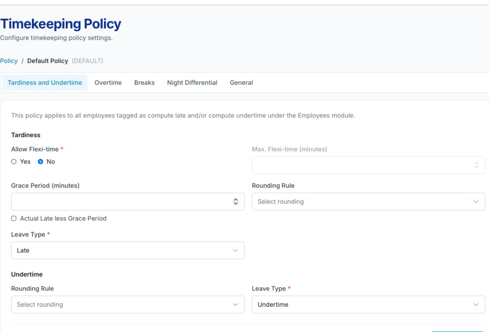
| Field | Ano ito | Para saan (Gamit) | Notes |
|---|---|---|---|
| Allow Flexi-time | Pwede bang mag-flexible ang oras ng pasok? | Kapag Yes, may allowance bago ma-count ang late; kapag No, fixed schedule ang base | Required; default No |
| Max. Flexi-time (minutes) | Pinakamataas na flexi allowance sa minuto | Cap ng flexi window — lampas dito, late na | Enabled lang kapag Flexi-time = Yes (grayed out kapag No) |
| Grace Period (minutes) | Minutong late na hindi pa binibilang | Hal. 15 min — hindi pa penalty ang employee | Optional number field |
| Actual Late less Grace Period | Checkbox sa ilalim ng Grace Period | Kapag checked, ibabawas muna ang grace bago bilangin ang late | Checkbox |
| Rounding Rule (Tardiness) | Paano i-round ang late minutes | Bago pumasok sa payroll LTDE — Round Off o Round Up | Optional; "Select rounding" kung walang rule |
| Leave Type (Tardiness) | Dropdown — hal. Late | Sa payroll Process, late minutes → leave tag + LTDE deduction | Required (*) |
| Rounding Rule (Undertime) | Paano i-round ang undertime minutes | Bago pumasok sa payroll UTDE | Same options as tardiness |
| Leave Type (Undertime) | Dropdown — hal. Undertime | Sa payroll Process, undertime → leave tag + UTDE deduction | Required (*) |
| Save Settings | Button sa baba ng form | I-save ang policy settings pagkatapos mag-edit | Bottom-right ng card |
Tardiness Equivalent table
Ito ang range mapping — hal. 1–5 min late = 5 min billable, 16+ min = absent.
| Field | Ano ito | Para saan (Gamit) | Notes |
|---|---|---|---|
| From (min) | Simula ng late range sa minuto | Start of equivalent minute range | Hal. 1 |
| To (min) | Dulo ng range | End of equivalent minute range | Hal. 5; dapat ≥ From |
| Equivalent (min) | Ilang minuto ang ibi-bill | Billable minutes for payroll LTDE/deductions | Hal. 5 min late → 5 min equivalent |
| Mark as absent | Ituturing na absent, hindi minute deduction | Treat range as absence not minutes | Tardiness only; equivalent = 0 |
Overtime
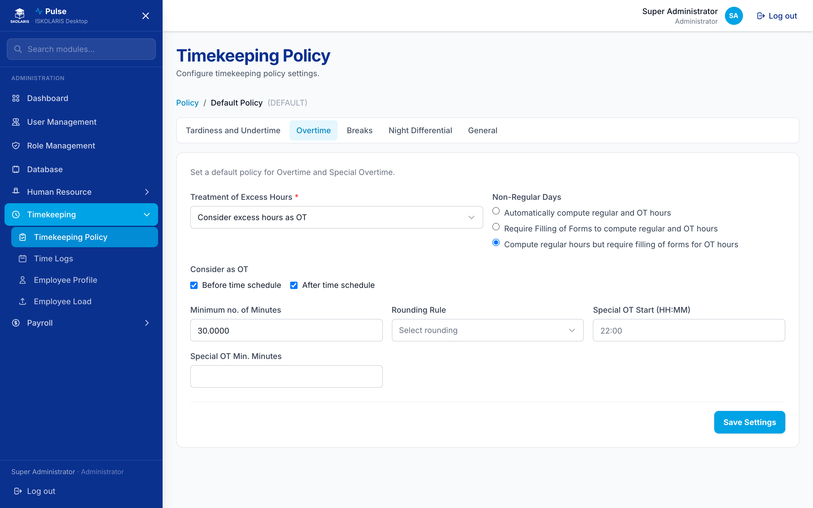
| Field | Ano ito | Para saan (Gamit) | Notes |
|---|---|---|---|
| Treatment of Excess Hours | Ano gagawin sa sobrang oras beyond schedule | Drive OT income (OVRT) sa payroll batch | See options below |
| Non-Regular Days | OT form rules sa rest day / holiday | OT form rules on rest days/holidays | Lumalabas kapag excess ≠ Disregard |
| Before time schedule | Maagang pasok = OT? | Early arrival OT computation | Checkbox; at least one "consider" required |
| After time schedule | Late stay = OT? | Late stay OT computation | Checkbox |
| Minimum no. of Minutes | Minimum OT para mabilang | Threshold before OT is billable | Hal. 30 min; per segment (before/after) |
| Rounding Rule | Paano i-round ang OT minutes | Round computed minutes before payroll | Round Off / Round Up |
| Special OT Start | Simula ng special/night OT window | Format HH:MM | |
| Special OT Min. Minutes | Minimum minutes sa special window | Min minutes in special OT window | Required kapag may Special OT Start |
Excess Hours options:
- Disregard excess hours — default; hindi binibilang ang OT
- Consider excess hours as OT — auto-add OVRT sa payroll
- Offset late with excess hours and disregard remainder
- Offset late with excess hours and consider remainder
Breaks
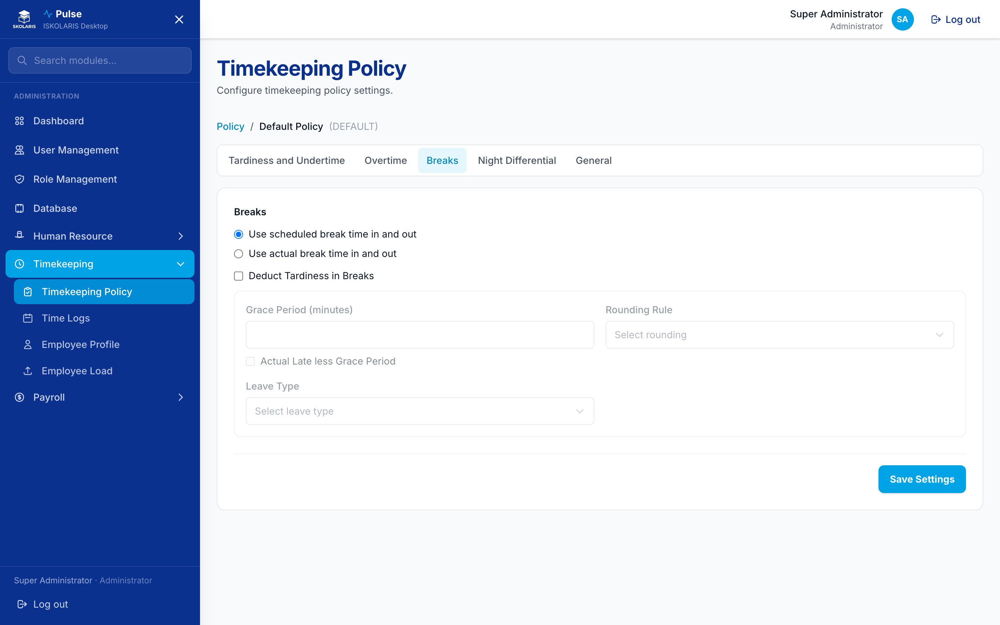
| Field | Ano ito | Para saan (Gamit) | Notes |
|---|---|---|---|
| Break computation | Paano kukunin ang break time | Scheduled (mula shift) o Actual (mula punches) | |
| Deduct Tardiness in Breaks | May penalty kapag late sa break? | Enable break-late LTDE at payroll | Checkbox; enables fields below |
| Grace Period (minutes) | Grace bago ma-count ang break late | Late minutes ignored before penalty | Required > 0 kapag enabled |
| Actual Late less Grace Period | I-subtract ang grace sa break late | Reduce counted late by grace | Checkbox |
| Rounding Rule | Break tardiness rounding | Round computed minutes before payroll | Round Off / Round Up |
| Leave Type | Leave type para sa break tardiness | Tag leave records at payroll process | Required kapag deduct enabled |
Night Differential
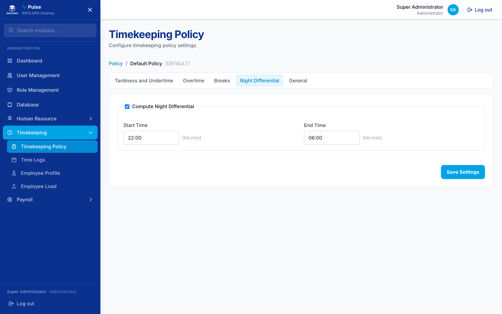
| Field | Ano ito | Para saan (Gamit) | Notes |
|---|---|---|---|
| Compute Night Differential | I-enable ang ND computation | Enable NDIF income at payroll | Checkbox |
| Start Time | Simula ng ND period | Default hint: 22:00 | |
| End Time | End ng ND period | Default hint: 06:00 |
General
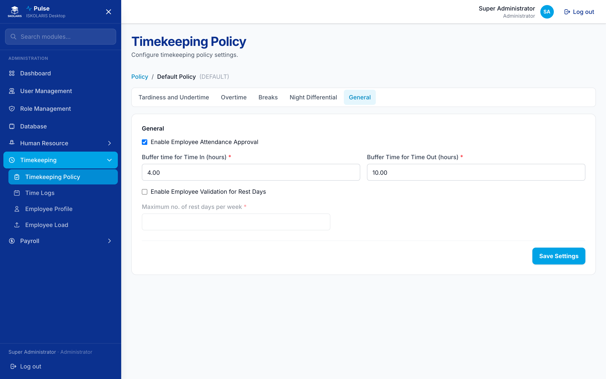
| Field | Ano ito | Para saan (Gamit) | Notes |
|---|---|---|---|
| Enable Employee Attendance Approval | Kailangan ng approval bago ma-finalize ang attendance | Require approval workflow | Default on |
| Buffer time for Time In (hours) | Gaano kaaga pwedeng mag-punch in | Valid early punch window | Default 4 hrs bago shift |
| Buffer Time for Time Out (hours) | Gaano kalate pwedeng mag-punch out | Valid late punch window | Default 10 hrs after shift |
| Enable Employee Validation for Rest Days | I-enforce ang rest day rules | Enforce weekly rest day cap | Default on |
| Maximum no. of rest days per week | Pinakamaraming rest day kada linggo | Max rest days allowed | Default 2; range 0–7 |
7.6 Time Logs — Upload Fields
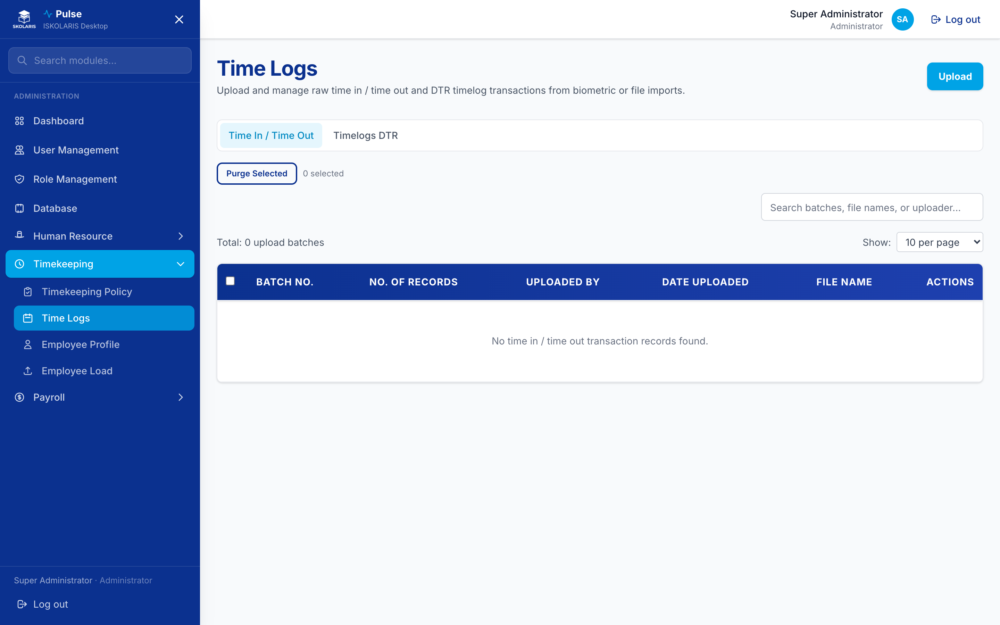
Tab: Time In / Time Out
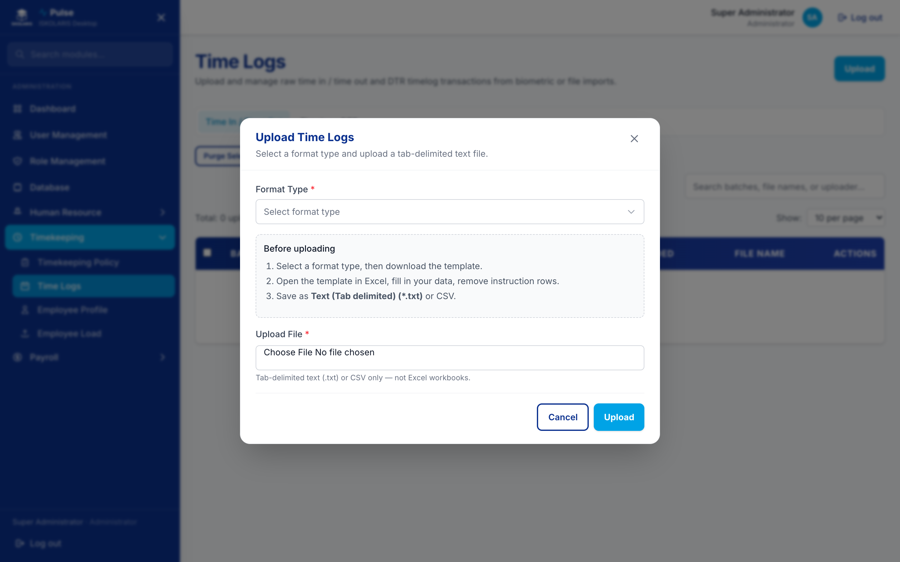
| Field | Ano ito | Para saan (Gamit) | Notes |
|---|---|---|---|
| Format Type | Device format na ginamit sa export | Select column mapping for upload parse | Required; pili mula sa Time Capturing Settings |
| Upload File | Tab-delimited .txt o .csv | Hindi Excel workbook; max 15 MB |
Flow: Piliin ang format → download template → fill data → save as .txt/.csv → upload → preview → Commit.
Tab: Timelogs DTR
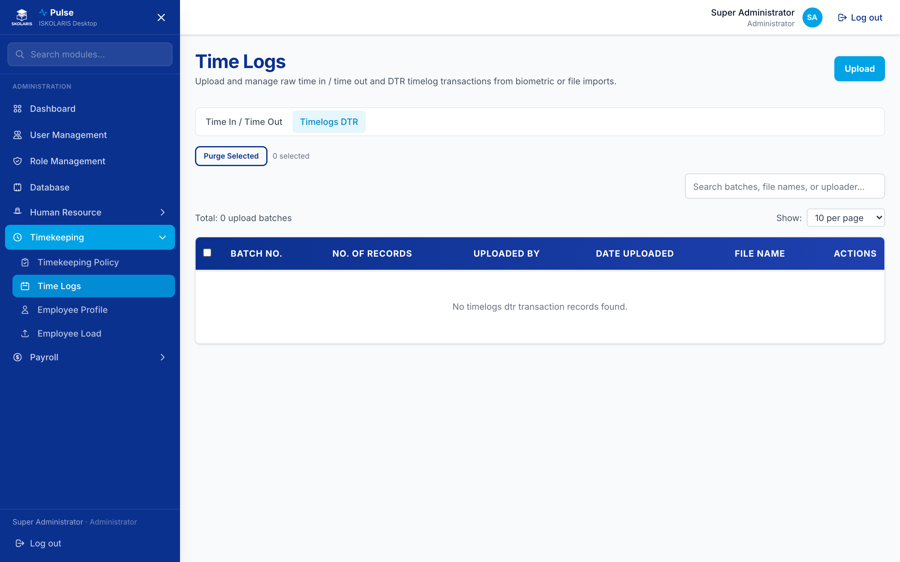
| Field | Ano ito | Para saan (Gamit) | Notes |
|---|---|---|---|
| Campus | Saan galing ang DTR file | Scope DTR parse rules at campus | Required; SA, SU, o CA |
| Upload File | Campus Excel DTR export | Cainta/San Mateo: .xls; Sumulong: .xlsx |
- San Mateo: Card Report tabs +
Att.log reportsheet; match by Biometric ID - Sumulong: DTR Report export; match by ID sa parentheses o by name
- Cainta Main:
.xlsTimesheet Report —Employee: NAME (biometric ID)blocks; In 1/Out 1 … In 5 columns per day
San Mateo DTR — paano basahin ang punches
Att.log report (hal. 07:24, 11:51, 13:00, 16:33).
Magkakalapit na scans (≤ 5 min) ay parehong tag — hal. 08:02 IN at 08:04 IN.
| Layer | Rule | Halimbawa (Apr 17) |
|---|---|---|
| Stored punches | Bawat oras = isang In o Out record | 07:24 IN, 11:51 OUT, 13:00 IN, 16:33 OUT |
| Payroll session | First IN at Last OUT = work window | 07:24 → 16:33 |
| Break logs | Mga punch between first IN at last OUT (OUT → IN pairs) | 11:51 OUT → 13:00 IN = lunch break (69 min) |
| Late / Undertime / OT | Gamit ang first IN at last OUT vs shift schedule | Late kung late ang 07:24; undertime kung maaga ang 16:33 |
| Break tardiness | Kapag naka-enable sa Policy → Breaks; actual break vs scheduled break | 69 min actual vs shift break allowance |
7.7 Employee Profile — Setup Fields
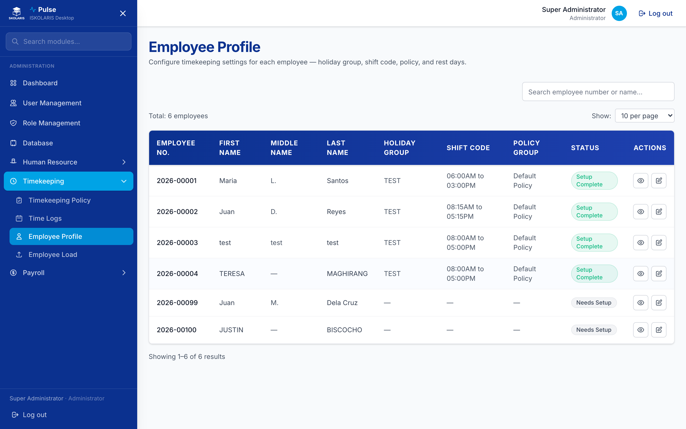
I-click ang Setup sa employee row → tab Timekeeping Settings.
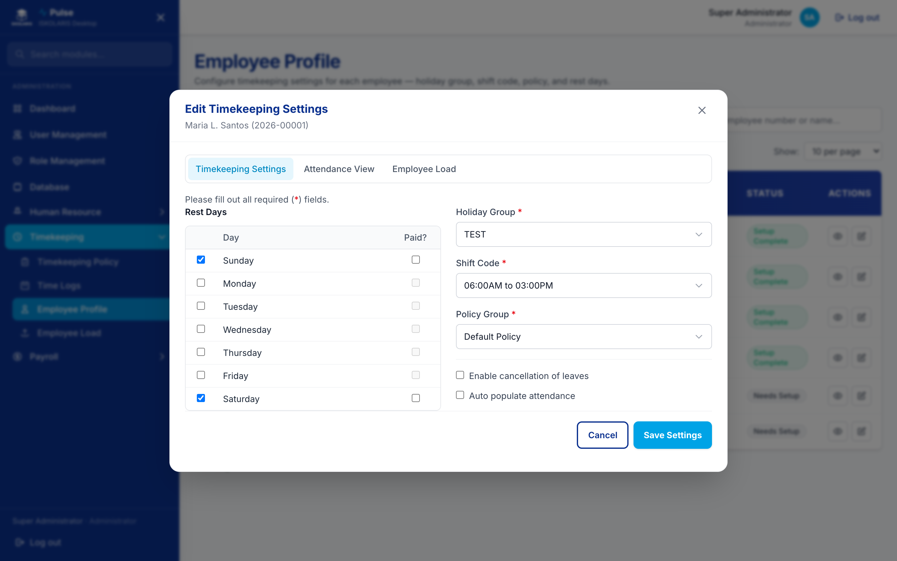
Rest Days table
| Field | Ano ito | Para saan (Gamit) | Notes |
|---|---|---|---|
| Day checkbox | Mark kung rest day ang araw (Sun–Sat) | Define employee weekly rest days | Pwede multiple days |
| Paid? | Bayad ba ang rest day? | Whether rest day is paid | Enabled lang kapag naka-check ang day |
Assignment fields
| Field | Ano ito | Para saan (Gamit) | Notes |
|---|---|---|---|
| Holiday Group | Anong holiday calendar ang applicable | Which holidays apply to employee | Required |
| Shift Code | Default work schedule ng employee | I-assign sa Employee Profile bilang work schedule | Required; shows shift description |
| Policy Group | Tardiness / OT / breaks / ND rules | Apply tardiness/OT/break/ND rules | Required; shows policy name |
| Enable cancellation of leaves | Pwede bang i-cancel ang filed leaves | Allow leave cancellation feature | Checkbox; default off |
| Auto populate attendance | Auto-fill attendance records | Auto-generate attendance from schedule | Checkbox; default off |
7.8 Employee Load — Upload Fields
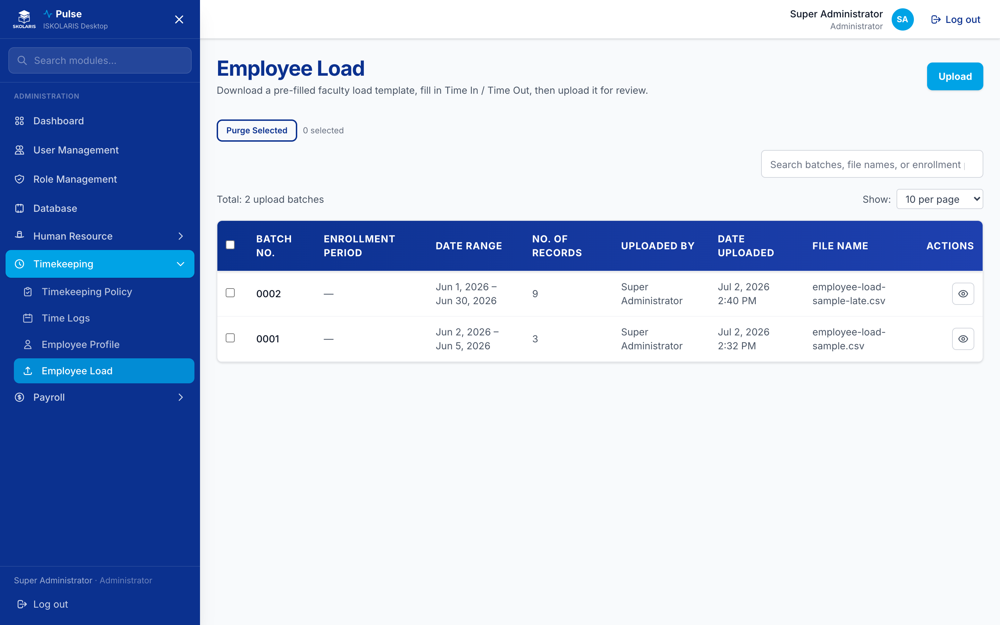
Upload modal
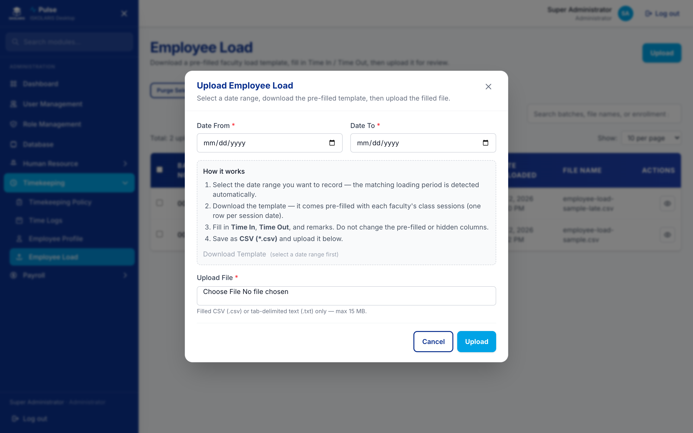
| Field | Ano ito | Para saan (Gamit) | Notes |
|---|---|---|---|
| Date From | Simula ng load period | Start of faculty load export period | Required; kailangan bago ma-download ang template |
| Date To | End ng load period | End of faculty load export period | Required; dapat ≥ Date From |
| Upload File | Filled CSV template | .csv o .txt; max 15 MB |
Template columns (user-editable)
| Column | Ano ito | Para saan (Gamit) | Notes |
|---|---|---|---|
| Time In | Actual na oras ng pasok sa class | Fill in | |
| Time Out | Actual na oras ng uwian | Fill in | |
| Remarks | User notes | User notes on load row | Optional; max 255 chars |
| Comments | Additional comments | Additional user notes | Optional |
| Verification Remarks | Verification notes | Verifier notes on load row | Optional |
Pre-filled columns (do not edit)
| Column | Ano ito | Para saan (Gamit) |
|---|---|---|
| No., Faculty Name, College, Modality, Subject, Section | Load details mula sa system | |
| Date, Class Schedule | Scheduled session info | |
| Employee No., Offering ID, Session Date (ISO) | Hidden matching keys — huwag baguhin |
8. Payroll
Field-by-field reference para sa payroll setup at processing.
8.1 Rate Definition
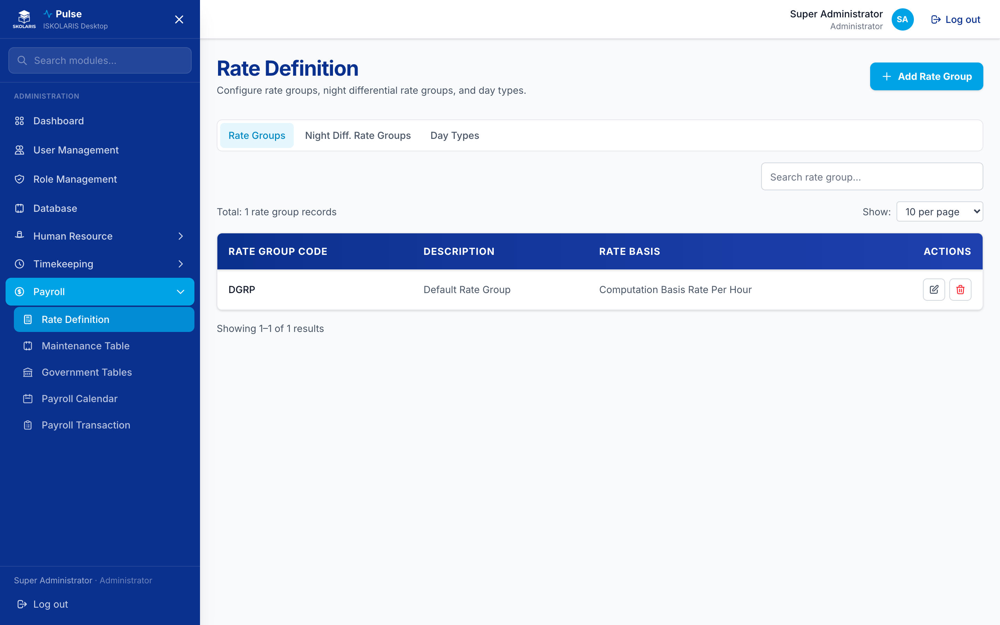
Rate Groups — Create / Edit
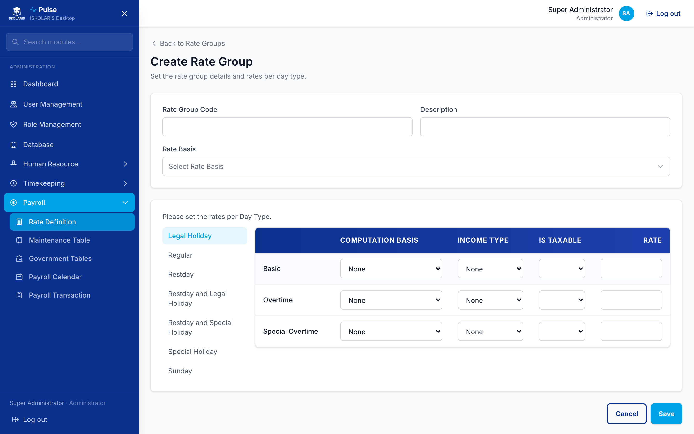
| Field | Ano ito | Para saan (Gamit) | Notes |
|---|---|---|---|
| Rate Group Code | Maikling code (hal. RG01) | I-assign sa Employee Salary → Rate Group | Required; max 4 chars; unique |
| Description | Label ng rate group | Display sa dropdowns | Required |
| Rate Basis | Fixed amount/hour o multiplier | Determines kung rate o fixed amount ang grid | Required |
| Rates grid | Per day type × time type cells | Compute pay kapag may hours worked sa special day/time | Computation Basis, Income Type, Taxable, Rate |
Night Diff. Rate Groups — Create / Edit
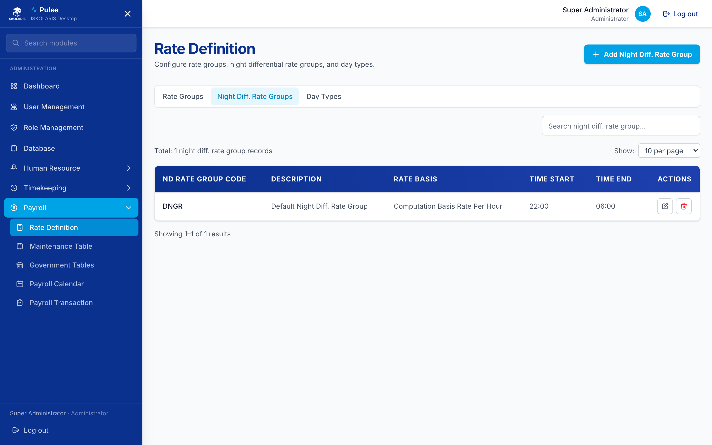
| Field | Ano ito | Para saan (Gamit) | Notes |
|---|---|---|---|
| ND Rate Group Code | Night diff group code | I-assign sa Employee Salary → ND Rate Group | Required; unique |
| Description | Label | Dropdown display | Required |
| Rate Basis | Computation method | ND rate calculation type | Required |
| Time (start / end) | ND window (hal. 22:00–06:00) | Identify ND hours from time logs | Required; HH:MM |
| Rates grid | ND rates per day/time type | NDIF income sa payroll batch | Same grid structure |
Day Types — Create / Edit
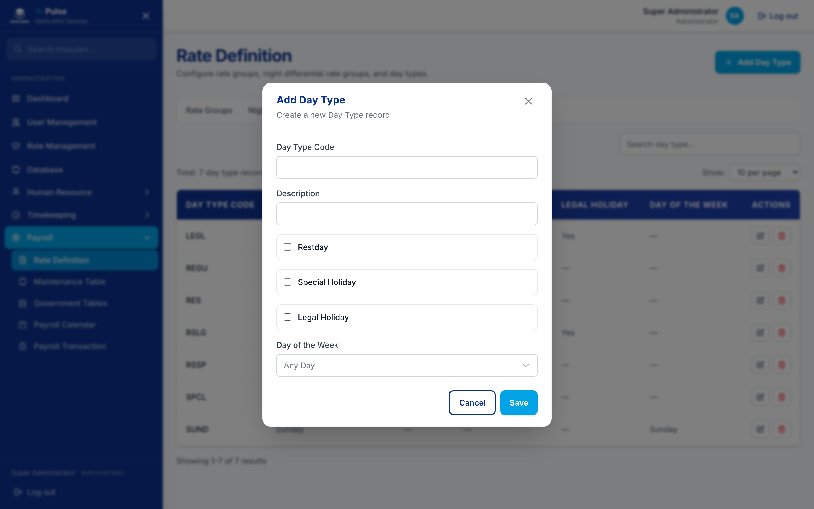
| Field | Ano ito | Para saan (Gamit) | Notes |
|---|---|---|---|
| Day Type Code | Code (hal. REGU, REST) | Hours worked upload at rate group matching | Locked if in use |
| Description | Full name | Display label | Required |
| Restday | Rest day flag | Rest day pay rules | Checkbox |
| Special / Legal Holiday | Holiday type flags | Holiday pay multipliers | Checkboxes |
| Day of the Week | Specific weekday o Any Day | Match day-specific rates | Optional select |
8.2 Maintenance Table
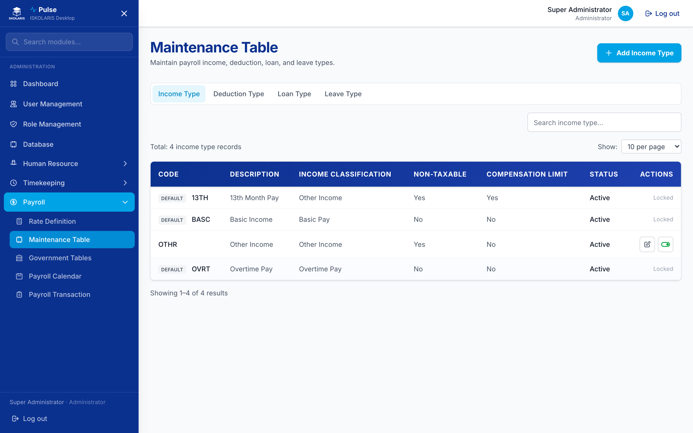
Income Types
| Field | Ano ito | Para saan (Gamit) | Notes |
|---|---|---|---|
| Income Type Code | Code (hal. BASC, OVRT) | Upload adjustments, batch incomes, rate groups | Max 4 chars; unique |
| Description | Label | Display sa payroll lines | Required |
| Income Classification | Category ng income | Reporting grouping | Select |
| Allow Non-Taxable | May non-taxable portion ba? | Split taxable/non-taxable sa batch | Checkbox |
| Include in Compensation Limit | Compensation cap flag | Compensation limit reports | Checkbox |
| Monthly Breakdown in YTD | Show in YTD report | Year-to-date reporting | Checkbox |
| Default Basic Income | Use as default basic | Cost center allocation default | Checkbox |
Deduction Types
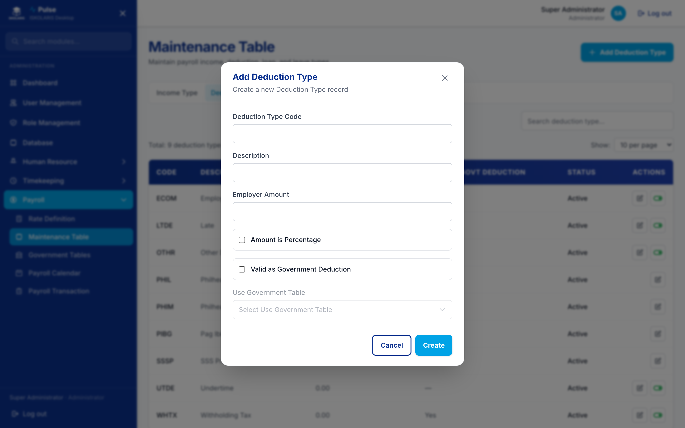
| Field | Ano ito | Para saan (Gamit) | Notes |
|---|---|---|---|
| Deduction Type Code | Code (hal. SSS, LTDE) | Batch deductions, uploads | Required |
| Description | Label | Payroll display | Required |
| Employer Amount | Default employer share | Employer contribution lines | Number |
| Amount is Percentage | % vs fixed amount | Computation method | Checkbox |
| Valid as Government Deduction | Govt premium flag | Links to govt table auto-compute | Shows govt table select |
| Use Government Table | Which govt table | Auto SSS/PH/PI/WHT sa process | Depends on govt flag |
Loan Types
| Field | Ano ito | Para saan (Gamit) | Notes |
|---|---|---|---|
| Loan Type Code | Loan identifier | Loan deductions sa batch/calendar schedule | Required |
| Description | Label | Display | Required |
| Loan Classification | Loan category | Grouping | Select |
| SSS Loan Type | SSS loan code | SSS loan reporting | When loan class = 1 |
| Is Viewable in Payslip | Show on payslip | Employee visibility | Default true |
Leave Types
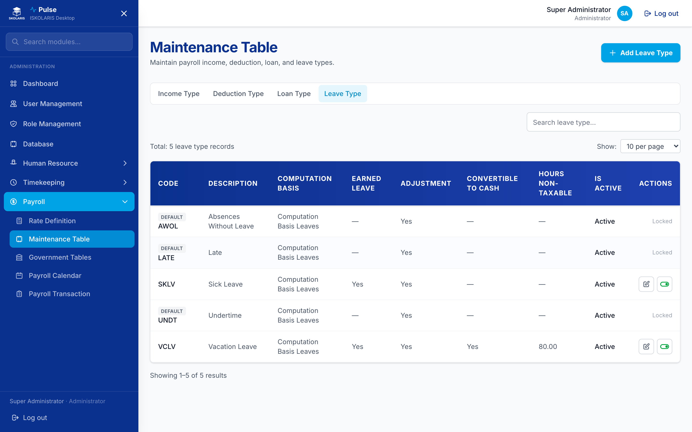
| Field | Ano ito | Para saan (Gamit) | Notes |
|---|---|---|---|
| Leave Type Code | Code (hal. VL, tardiness leave) | Policy leave tagging, payroll leaves | Required |
| Description | Label | Display | Required |
| Computation Basis | How leave is computed | Leave pay calculation | Required |
| Apply To | Scope ng leave | Eligibility rules | Select |
| Is Late/Undertime Leave? | LT/UT leave marker | Link sa tardiness policy leave types | Select |
| Valid as Earned Leave | Earned leave flag | Leave balance tracking | Checkbox |
| Valid for Adjustment | Adjustment eligible | Payroll adjustments | Checkbox |
| Convertible to Cash | Monetization allowed | Leave conversion pay | Shows hours non-taxable |
| Hours Non-Taxable | Non-taxable hours limit | Tax treatment sa conversion | When convertible |
| Is Active | Status | Dropdown availability | Default true |
8.3 Government Tables
Pag-IBIG
| Field | Ano ito | Para saan (Gamit) | Notes |
|---|---|---|---|
| Salary Cap | Salary bracket ceiling | Determine Pag-IBIG contribution tier | Required ≥ 0 |
| Employee / Employer Contribution | Contribution amounts | Auto PI deduction sa batch process | Required ≥ 0 |
PhilHealth
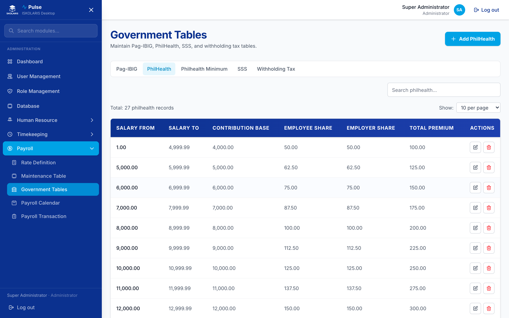
| Field | Ano ito | Para saan (Gamit) | Notes |
|---|---|---|---|
| Salary From / To | Income bracket range | Match employee compensation | Required |
| Contribution Base | Basis amount | PhilHealth premium calculation | Required |
| Employee / Employer Share | Premium split | PH deduction lines sa batch | Required |
PhilHealth Minimum
| Field | Ano ito | Para saan (Gamit) | Notes |
|---|---|---|---|
| Employee / Employer Amount | Minimum premium | Floor PH deduction kahit mababa ang pay | Edit only |
SSS
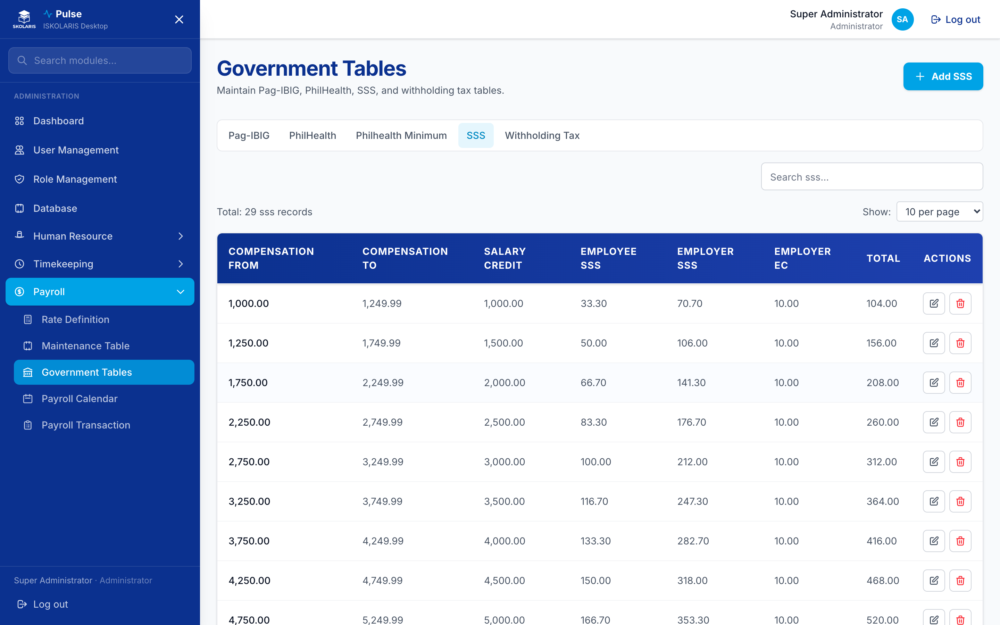
| Field | Ano ito | Para saan (Gamit) | Notes |
|---|---|---|---|
| Compensation From / To | Salary credit range | Bracket lookup | Required |
| Salary Credit | SSS salary credit | Contribution basis | Required |
| Employee SSS / Employer SSS / EC | Contribution amounts | SSS deduction lines sa batch | Required |
Withholding Tax 2023
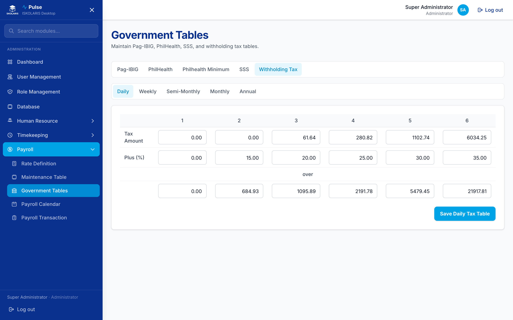
| Field | Ano ito | Para saan (Gamit) | Notes |
|---|---|---|---|
| Tax Amount / Plus (%) / over | WHT grid columns per frequency | Auto WHT deduction sa batch process | Daily/Weekly/Semi-Monthly/Monthly grids |
| Income From / To | Annual income bracket | Annualized WHT | Annual tab |
| Tax Amount Due / Percentage Due | Tax due per bracket | Annual tax computation | Annual tab |
8.4 Payroll Calendar
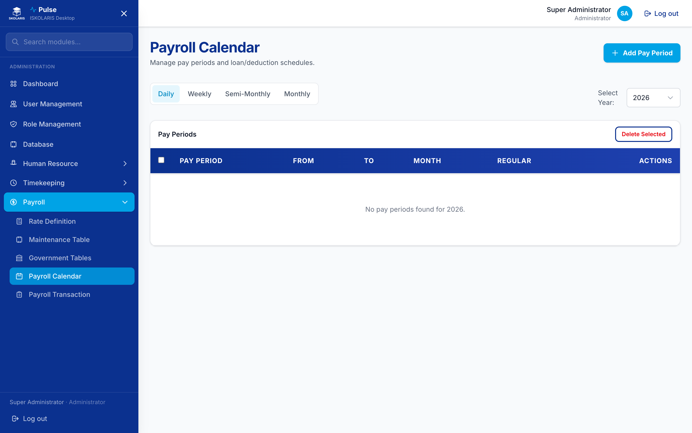
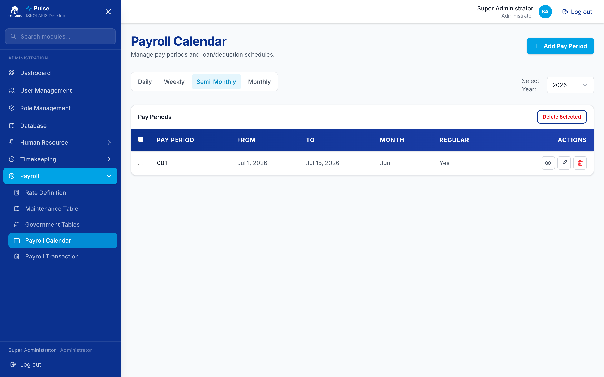
Create / Edit Pay Period
| Field | Ano ito | Para saan (Gamit) | Notes |
|---|---|---|---|
| Pay Year | Calendar year | Organize periods by year | Required |
| Pay Period | Period number (hal. 001) | Identify batch pay period | 1–999 |
| Date From / Date To | Period date range | Time log filtering, hours worked scope | Required |
| Calendar Month | Month assignment | Reporting month | Empty = auto-assign |
| Regular Period | Regular vs adjustment period | Batch type selection | Default true |
| Category (User Type) | faculty / staff / admin | Filter eligible employees sa batch | Dual-list; required |
| Colleges | College codes | Further filter faculty employees | Required when applicable |
Pay Period Schedule (per period)
| Field | Ano ito | Para saan (Gamit) | Notes |
|---|---|---|---|
| Deduction Types | Scheduled deductions | Auto-apply deductions sa batch process | Checkbox list |
| Loan Types | Scheduled loans | Auto-apply loan deductions | Checkbox list; PHIL/PHIM exclusive |
Autofill Pay Periods
| Field | Ano ito | Para saan (Gamit) | Notes |
|---|---|---|---|
| Every Week on / Frequency days | Recurrence pattern | Auto-generate multiple periods | Depends on pay type |
| Pay Year / Date From / Date To | Generation range | Scope ng autofill | Required |
| Occurrences | Number of periods | Alternative to date-to range | Daily or range mode |
| Regular Period | Regular flag | Mark generated periods as regular | Checkbox |
8.5 Payroll Transaction
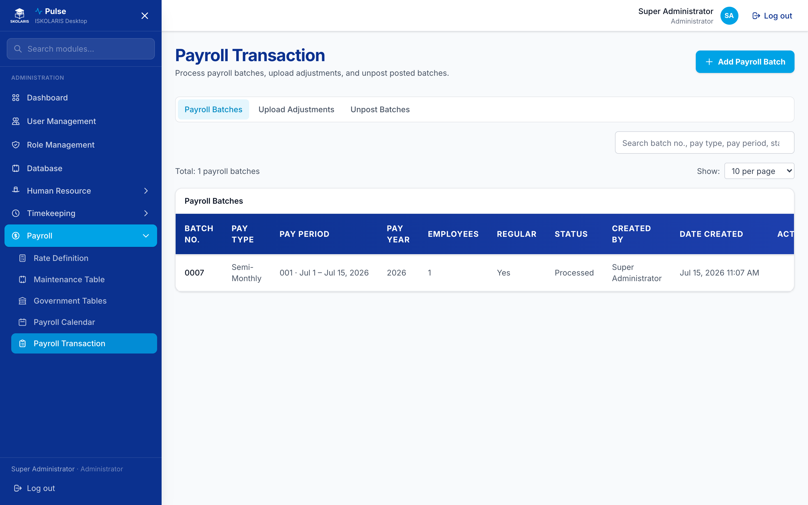
Create Payroll Batch
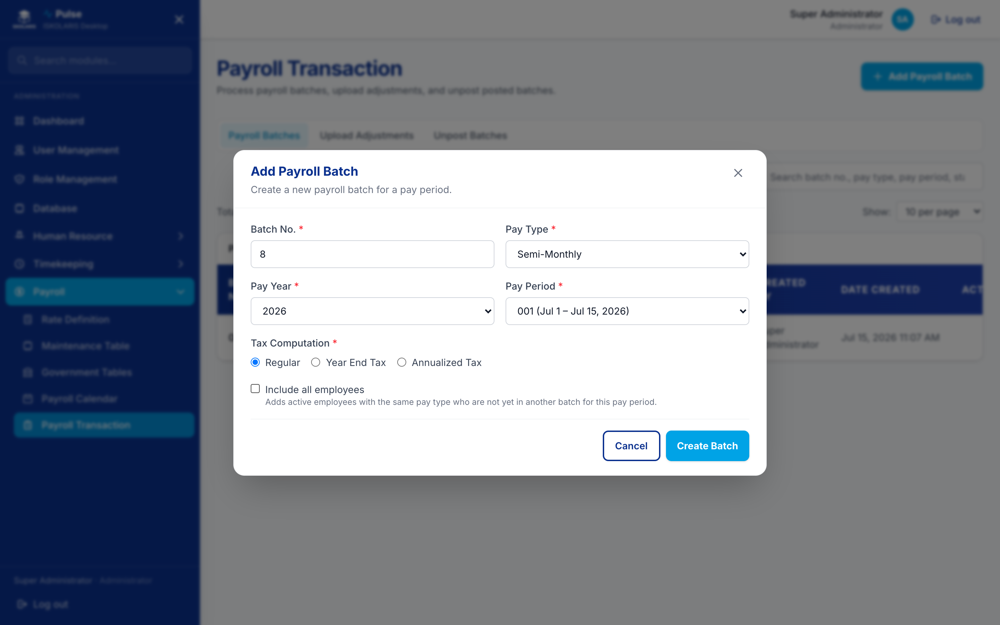
| Field | Ano ito | Para saan (Gamit) | Notes |
|---|---|---|---|
| Batch No. | Payroll run number | Unique identifier ng batch | Required; auto-suggested |
| Pay Type | Daily/Weekly/Semi-Monthly/Monthly | Filter calendar periods at employees | Required |
| Pay Year | Year | Filter pay periods | Required |
| Pay Period | Calendar period | Defines date range at payroll scope | Unposted periods only |
| Tax Computation | WHT method | How withholding tax is computed | Radio; required |
| Include all employees | Auto-add eligible employees | Skip manual employee selection | Checkbox |
Add Employees to Batch
| Field | Ano ito | Para saan (Gamit) | Notes |
|---|---|---|---|
| Search | Filter employee list | Find employees to add | Live search |
| Include all eligible | Bulk select | Add all matching employees | Checkbox |
| Employee checkboxes | Individual selection | Choose sino kasama sa batch | employee_ids[] |
Employee Detail — Add Income
| Field | Ano ito | Para saan (Gamit) | Notes |
|---|---|---|---|
| Income Type | Pay component | Manual income line sa batch | Required |
| Taxable / Non-Taxable | Amount split | Tax treatment; triggers govt recalc | At least one > 0 |
Employee Detail — Add Deduction
| Field | Ano ito | Para saan (Gamit) | Notes |
|---|---|---|---|
| Deduction Type | Deduction code | Manual deduction line | Govt deductions blocked (auto-computed) |
| Hours | Late/undertime hours | LTDE/UTDE amount computation | Required for LTDE/UTDE |
| Employee / Employer Amount | Deduction amounts | Split deduction lines | Numbers |
| Reference Number / Date | External reference | Audit trail for deduction | Optional |
Upload Adjustments (Incomes / Deductions / Hours Worked)
| Field | Ano ito | Para saan (Gamit) | Notes |
|---|---|---|---|
| Pay Type / Year / Period | Target pay calendar | Link upload sa tamang pay period | Required |
| Upload File | CSV/TXT template | Bulk import adjustments | .csv/.txt; max 15 MB |
Template columns by upload type:
| Upload type | Columns | Para saan (Gamit) | Notes |
|---|---|---|---|
| Incomes | Employee No., Income Type Code, Taxable, Non-Taxable, Amount | Extra income lines bago/during batch | Income type code required |
| Deductions | Employee No., Deduction Type Code, Hours, Emp Amount, Empr Amount, Amount, Ref No., Ref Date | Extra deductions (LTDE/UTDE need hours) | Hours required for LTDE/UTDE |
| Hours Worked | Employee No., Day Type Code, Time Type Code, No. of Hours | Primary hours source sa payroll process (merge din sa time logs kapag may upload na) | See Figure 55 sa Common Tasks |
Batch actions (buttons)
| Action | Ano ito | Para saan (Gamit) | Notes |
|---|---|---|---|
| Process | Run payroll computation | Compute incomes, deductions, govt premiums, WHT mula sa logs/uploads/policy | First-time compute |
| Reprocess | Re-run computation | Pick up bagong uploads o manual changes | After edits |
| Post | Finalize batch | Lock batch as official payroll | Cannot edit after post |
| Unpost | Reverse posted batch | Allow corrections | Unpost Batches tab |
9. Common Tasks
Run semi-monthly payroll (typical flow)
- Employee Profile — confirm shift, policy, holiday group, and rest days per employee (one-time o kapag may bagong hire).
- Payroll Transaction → Upload Adjustments → Hours Worked — upload hours per employee para sa pay period (Day Type, Time Type, No. of Hours). Tingnan ang sample sa ibaba.
- Payroll Transaction → Payroll Batches — create batch para sa tamang semi-monthly period (Pay Type = Semi-Monthly, Pay Year, Pay Period).
- Add employees → Process → review Net Pay per employee (Incomes tab shows hours at amounts).
- Reprocess kung may bagong Hours Worked upload o manual adjustment.
- Post when totals are correct.
2026-00003: REGU/BP 40h, REGU/OT 4h, REGU/NDIF 2hKapag naka-enable na ang Time Logs: I-upload muna ang punches sa pay period; ang hours mula logs ay i-merge sa uploaded Hours Worked sa Process.
Add a new employee manually
- Human Resource → Employees → Add Employee.
- Complete campus and employee details in the wizard.
- Go to Timekeeping → Employee Profile and run Setup for that employee.
Grant a staff user access to Payroll only
- Role Management → Edit (or create a role).
- Enable Payroll sub-modules (view/create/update as needed).
- User Management → Edit user → assign the role.
Back up before desktop reinstall
- Database → Download Backup.
- Install the new Pulse version.
- Restore data per your IT procedure (or contact support).
10. Tips & Troubleshooting
| Issue | What to try |
|---|---|
| Empty pay type dropdown | Restart the desktop app — reference data auto-repairs on launch |
| Upload preview shows errors | Check campus codes, employee numbers, and type codes against lookup tables |
| Batch shows wrong hours/amount | Re-upload adjustments, then Reprocess the batch |
| Module missing from sidebar | Ask admin to check Role Management permissions |
| macOS blocks the app | Right-click app → Open once, then allow in Privacy & Security |
Audit trail
All create, update, and delete actions are recorded in the system audit log (sys_logs) for accountability.